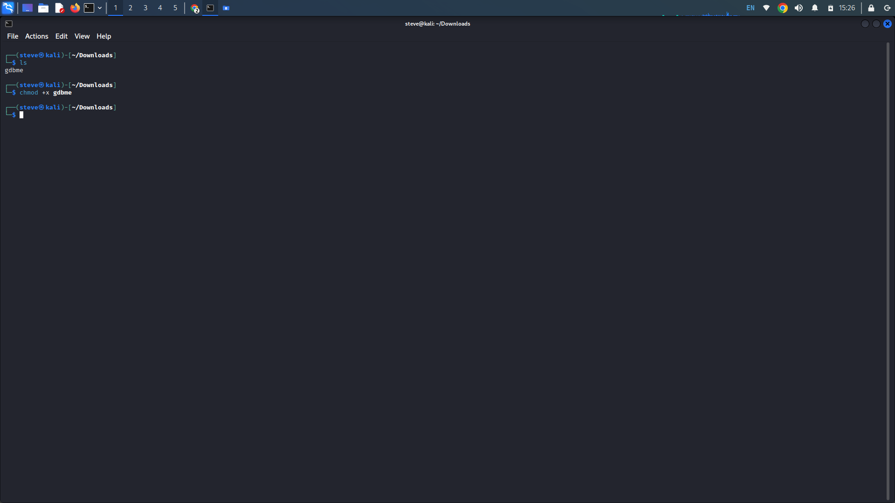
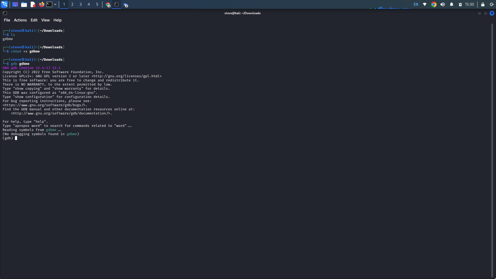
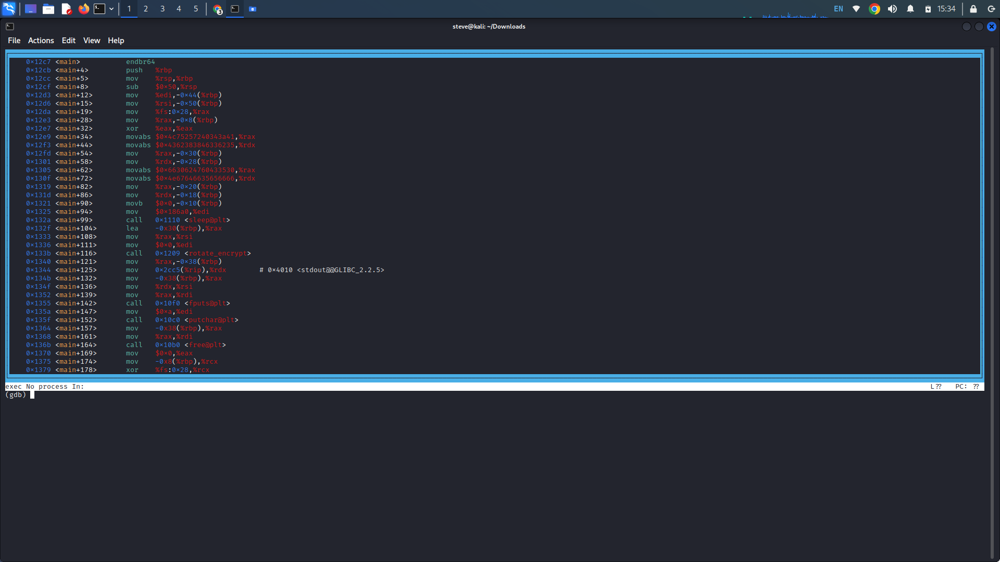
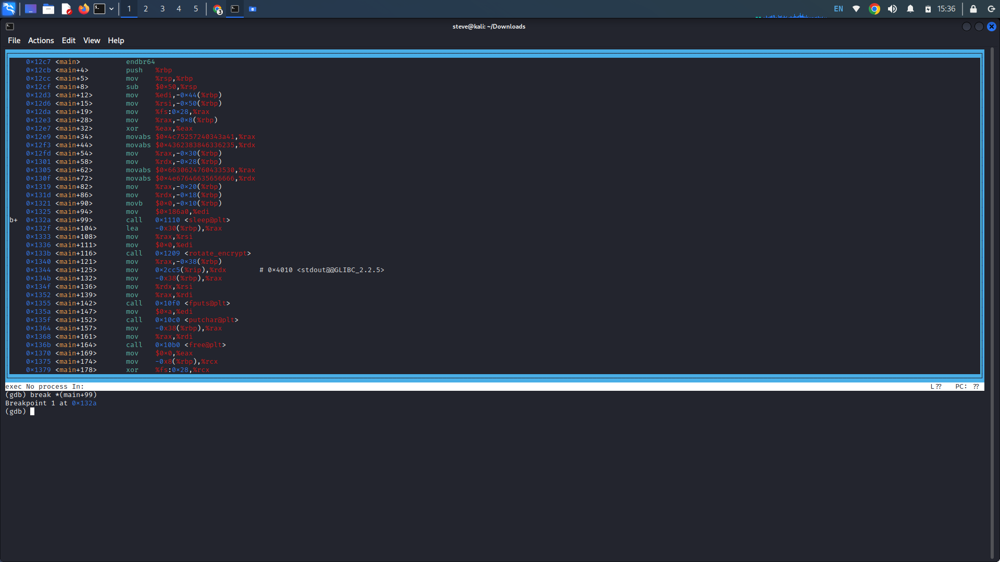
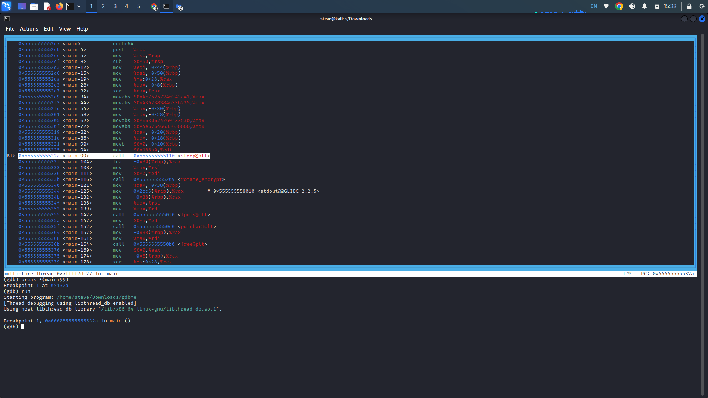

GDB Test Drive
Description: Can you get the flag? Download this binary. Here's the test drive
instructions: $ chmod +x gdbme $ gdb gdbme (gdb) layout asm (gdb) break *(main+99) (gdb) run (gdb) jump
*(main+104)
Writeup: Download the file and follow the instructions in the challenge description. First
apply executable permissions to the gdbme file.

Next start GDB (GNU Debugger) opening the file in the debugger. This allows us to interactively debug the file through the command line.
Next, the description prompts us to execute "layout asm". This GDB command sets the display layout to assembly mode, GDB will display the disassembled machine instructions.

Now execute the command, "break *(main+99)". This GDB command sets a breakpoint in the program located at the memory location at main+99. Sets a breakpoint 99 bytes from the start of the main function.

Now run the "run" command to execute the program from the start. It will stop at the breakpoint set by the previous command.

Next execute the "jump *(main+104)" command. This GDB command jumps to the instruction located at memory location main+104 and executes. This command returns our flag.
